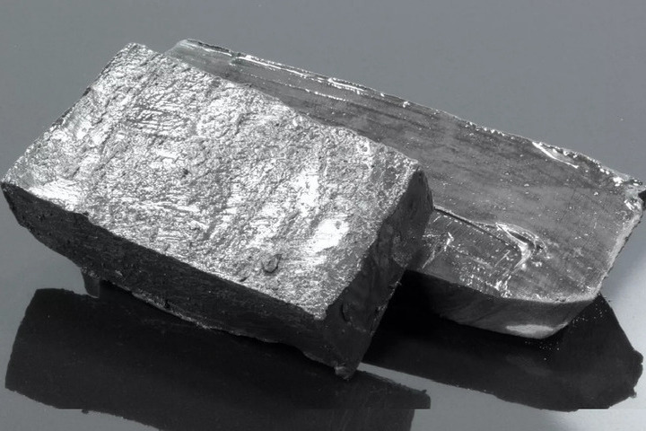
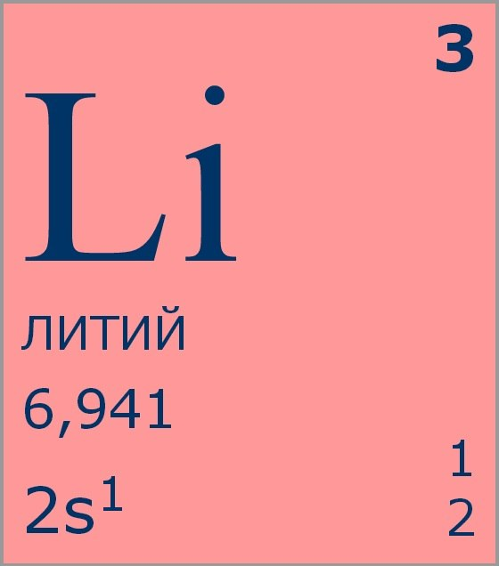
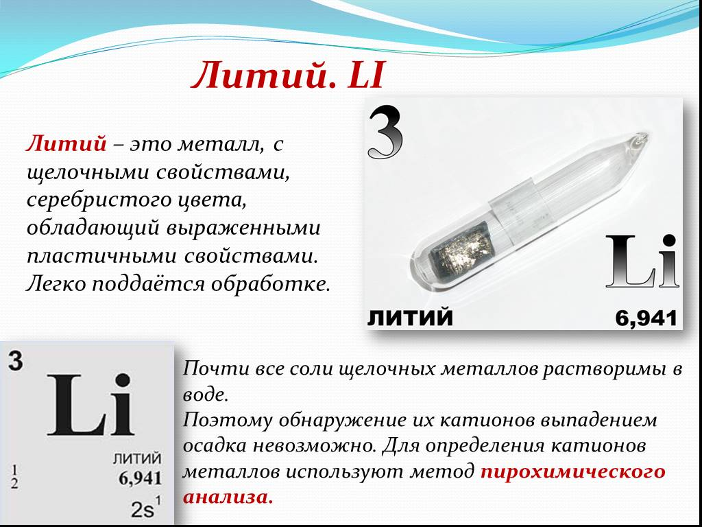

Гелий
Ли́тий (химический символ — Li, от лат. Lithium) — химический элемент 1-й группы (по устаревшей классификации — главной подгруппы первой группы, IA), второго периода периодической системы химических элементов Д. И. Менделеева, с атомным номером 3. Как простое вещество литий — это очень лёгкий (обладает наименьшей плотностью среди всех металлов), мягкий щелочной металл серебристо-белого цвета.

Литий открыт в 1817 г. шведским химиком А. Арфведсоном в минерале петалите. Металлический литий впервые получен в 1818 г. Г. Дэви.

Соединения лития получают в результате гидрометаллургической переработки концентратов – продуктов обогащения литиевых руд. Основной промышленный минерал лития – сподумен – перерабатывают по известковому, сульфатному, сернокислотному и щёлочно-солевому методам. По известковому методу сподумен разлагается известняком при 1150–1200 °С:

Из лития изготовляют аноды химических источников тока (аккумуляторов, например, литий-хлорных аккумуляторов) и гальванических элементов с твёрдым электролитом (например, литий-хромсеребряный, литий-висмутатный, литий-окисномедный, литий-двуокисномарганцевый, литий-иодсвинцовый, литий-иодный, литий-тионилхлоридный, литий-оксидванадиевый, литий-фторомедный, литий-двуокисносерный элементы), работающих на основе неводных жидких и твёрдых электролитов (тетрагидрофуран, пропиленкарбонат, метилформиат, ацетонитрил).Кобальтат лития и молибдат лития показали лучшие эксплуатационные свойства и энергоёмкость в качестве положительного электрода литиевых аккумуляторов.Гидроксид лития используется как один из компонентов щелочного электролита для аккумуляторов. Добавление гидроксида лития к электролиту тяговых железо-никелевых, никель-кадмиевых, никель-цинковых аккумуляторных батарей повышает их срок службы в 3 раза и ёмкость на 21 % (за счёт образования никелатов лития).Алюминат лития — наиболее эффективный твёрдый электролит (наряду с цезий-бета-глинозёмом).